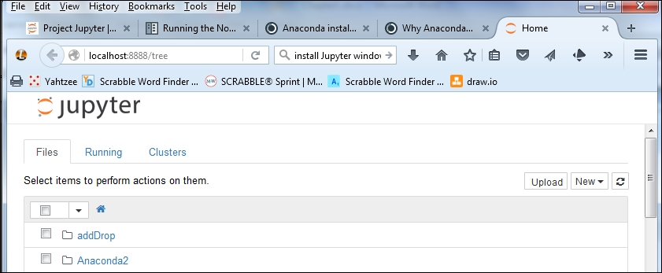
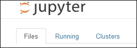
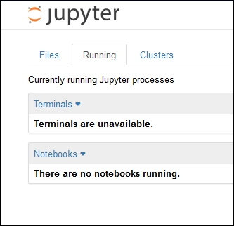
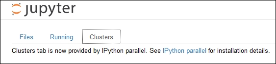
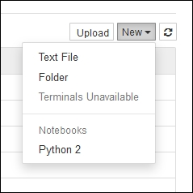
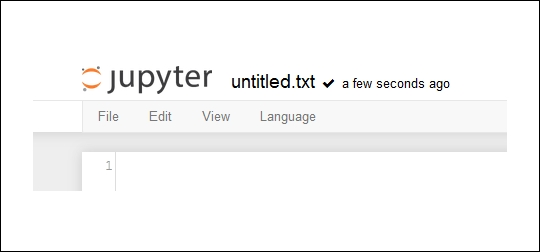
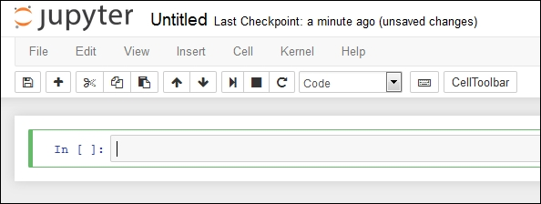
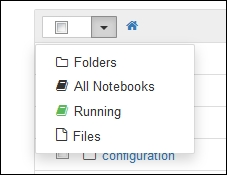
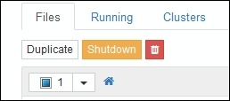
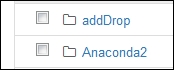

Chapter 1. Introduction to Jupyter
Jupyter is a tool that allows data scientists to record their complete analysis process, much in the same way other scientists use a lab notebook to record tests, progress, results, and conclusions.
The Jupyter product was originally developed as part of the IPython project. The IPython project was used to provide interactive online access to Python. Over time it became useful to interact with other data analysis tools, such as R, in the same manner. With this split from Python, the tool grew into its current manifestation of Jupyter. IPython is still an active tool that's available for use. The name Jupyter itself is derived from the combination of Julia, Python, and R.
Jupyter is available as a web application from a number of places. It can also be used locally over a wide variety of installations. In this book, we will be exploring using Jupyter on a Mac and a Windows PC and over the Internet with other providers.
In this chapter, we will cover the following topics:
- First look at Jupyter
- Installing Jupyter on Windows
- Installing Jupyter on Mac
- Notebook structure
- Notebook workflow
- Basic notebook operations
- Security in Jupyter
- Configuration options for Jupyter
Here is a sample opening page when using Jupyter (this screenshot is on a Windows machine):

You should get yourself acquainted with the environment. The Jupyter user interface has a number of components:
- Product title, Jupyter, in the top left (as expected). The logo and the title name are clickable and will return you to the Jupyter Notebook home page.
- There are three tabs displayed: Files, Running, and Clusters:

- The Files tab shows the list of files in the current directory of the page (described later on in this section).
- The Running tab presents another screen of the currently running processes and notebooks. The drop-down lists for Terminals and Notebooks are populated with their running members:

- The Clusters tab presents another screen to display the list of clusters available. This topic is covered in a later chapter:

- In the top right corner of the screen are three buttons: Upload, New (menu), and a Refresh button.
- The Upload button is used to add files to the notebook space. You may also just drag and drop as you would when handling files. Similarly, you can drag and drop notebooks into specific folders as well.
- The menu with New at the top presents a further menu of Text File, Folder, Terminals Unavailable, Notebooks, and Python 2:

- The Text File option is used to add a text file to the current directory. Jupyter will open a new browser window for you running a text editor. The text entered is automatically saved and will be displayed in your notebook's Files display:

Note
The default filename, untitled.txt, is editable.
- The Folder option creates a new folder with the name
Untitled Folder. Remember, all of the file/folder names are editable:
- The Terminals Unavailable option is disabled for Windows. On a Mac, the option allows you to start an IPython session.
- The Notebooks option will be activated when additional notebooks are available in your environment.
- The Python 2 option is used to begin a Python 2 session interactively in your notebook. The interface looks like the following screenshot. You have full file editing capabilities for your script, including saving as a new file. You also have a complete working IDE for your Python script:

Note
Like the Text File and Folder option, you have created a Python script file in your notebook and it is running!
- The refresh button is used to update the display. It's not really necessary as the display is reactive to any changes in the underlying file structure.
- At the top of the Files tab's item list is a checkbox, a drop-down menu, and a home button:
- The checkbox is used to toggle all the checkboxes in the Items list
- The drop-down menu presents a list of the choices available, Folders, All Notebooks, Running, and Files, as shown in the following screenshot:

- The Folders selection will select all the folders in the display and present a count of the folders in the small box
- The All Notebooks selection will change the count to the number of notebooks and provide you with three options:
- Duplicate the current notebook
- Shut down the current notebook
- Trash the current notebook
- You can see them in the following screenshot:

- The Running selection will select any running scripts and update the count to the number selected
- The Files selection will select all of the files in the notebook display and update the count accordingly
- The home button brings you back to the home screen of the notebook.
On the left-hand side of every item is a checkbox, an icon, and the item's name:

- The checkbox is used to build a set of files to operate upon.
- The icon is indicative of the type of item. In this case, all of the items are folders.
- The name of the item corresponds to the name of the object. In this case, the filenames are as used on the disk.